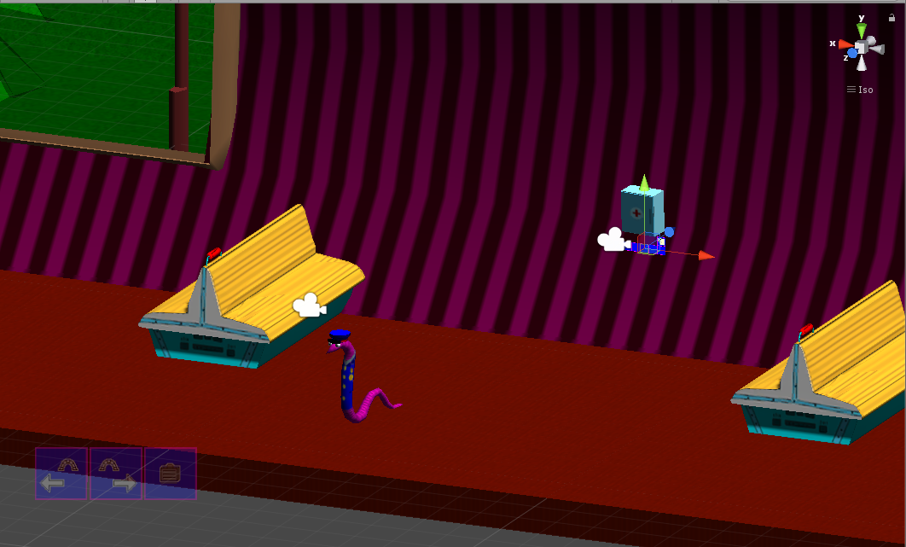

ЧЕРВЕМЕНТ-2 ВЫШЕЛ! [11.11.2021]
|  | Более 7 лет я делал эту игру - с июня 2014
по ноябрь 2021. В час по чайной ложке, а то и того менее. Unity3D - довольно тяжёлая среда, если честно. Проект с годами становился всё более громоздким, а код - всё более запутанным. Иногда, когда пишешь код от случая к случаю, возвращаешься к нему, и, читая его, думаешь: "а под чем я был, когда это писал?" :) Проект шёл очень тяжело и поэтому, и потому, что среда незнакомая, и, конечно, потому, что это квест. Ну вот, что получилось, то получилось. Приятной игры! |
| К сожалению, из-за
ограничений Гитхаб-хостинга, поиграть прямо в браузере не получится
- игра превышает лимиты в 25 МБ/файл. Но Вы же любите квесты! Качайте 3 тома архивов, ставьте 7z-архиватор, распаковывайте, устанавливайте и играйте - приятной игры! |
Архив 1/3 Архив 2/3 Архив 3/3 |
| Хотя стоп, обнаружен хостинг, который позволяет публиковать большие файлы |
Будьте готовы к бесяче долгой загрузке игры к необъяснимым падением вкладок браузера к исчерпанной квоте хостинга к возможному отсутствия звука Но таки попробуйте поиграть из браузера. |
<<==Назад |